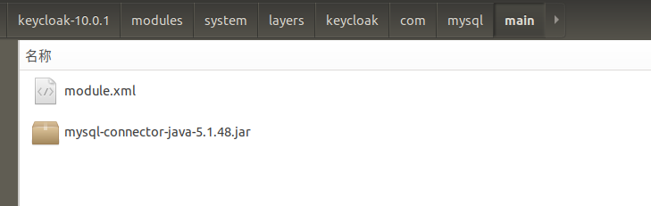
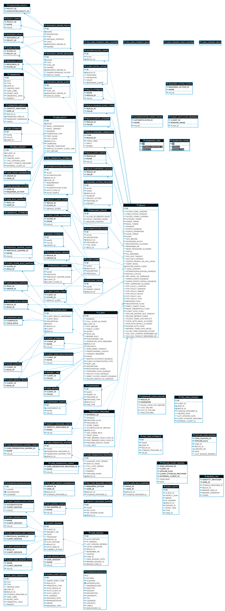

数据源配置
数据源配置
Keycloak默认使用的数据库是H2。H2数据库在高并发情况下不太可行，也不应该在集群中使用。因此我们应该把Keycloak连接到更成熟的数据库。
本文以mysql5为例子.
安装jdbc驱动.

module.xml 内容:
<?xml version="1.0"?>
<module xmlns="urn:jboss:module:1.3" name="com.mysql">
<resources>
<resource-root path="mysql-connector-java-5.1.48.jar"/>
</resources>
<dependencies>
<module name="javax.api"/>
<module name="javax.transaction.api"/>
</dependencies>
</module>
声明并加载驱动
在standalone.xml搜索 urn:jboss:domain:datasources,然后修改:
<subsystem xmlns="urn:jboss:domain:datasources:5.0">
<!--.....-->
<drivers>
<driver name="h2" module="com.h2database.h2">
<xa-datasource-class>org.h2.jdbcx.JdbcDataSource</xa-datasource-class>
</driver>
<driver name="mysql" module="com.mysql"> <!--增加mysql驱动声明-->
<xa-datasource-class>com.mysql.jdbc.jdbc2.optional.MysqlXADataSource</xa-datasource-class>
</driver>
</drivers>
</datasources>
</subsystem>
修改keycloak数据源
在standalone.xml搜索 urn:jboss:domain:datasources,然后修改:
<subsystem xmlns="urn:jboss:domain:datasources:5.0">
<datasources>
<datasource jndi-name="java:jboss/datasources/ExampleDS" pool-name="ExampleDS" enabled="true" use-java-context="true" statistics-enabled="${wildfly.datasources.statistics-enabled:${wildfly.statistics-enabled:false}}">
<connection-url>jdbc:h2:mem:test;DB_CLOSE_DELAY=-1;DB_CLOSE_ON_EXIT=FALSE</connection-url>
<driver>h2</driver>
<security>
<user-name>sa</user-name>
<password>sa</password>
</security>
</datasource>
<!-- <datasource jndi-name="java:jboss/datasources/KeycloakDS" pool-name="KeycloakDS" enabled="true" use-java-context="true" statistics-enabled="${wildfly.datasources.statistics-enabled:${wildfly.statistics-enabled:false}}">
<connection-url>jdbc:h2:${jboss.server.data.dir}/keycloak;AUTO_SERVER=TRUE</connection-url>
<driver>h2</driver>
<security>
<user-name>sa</user-name>
<password>sa</password>
</security>
</datasource> -->
<!--注释掉keycloak原来的数据源配置,修改为以下配置-->
<datasource jndi-name="java:jboss/datasources/KeycloakDS" pool-name="KeycloakDS" enabled="true" use-java-context="true" statistics-enabled="${wildfly.datasources.statistics-enabled:${wildfly.statistics-enabled:false}}">
<connection-url>jdbc:mysql://localhost:3306/keycloak?useSSL=false</connection-url>
<driver>mysql</driver>
<security>
<user-name>root</user-name>
<password>root</password>
</security>
<validation>
<valid-connection-checker class-name="org.jboss.jca.adapters.jdbc.extensions.mysql.MySQLValidConnectionChecker"/>
<background-validation>true</background-validation>
<exception-sorter class-name="org.jboss.jca.adapters.jdbc.extensions.mysql.MySQLExceptionSorter"/>
</validation>
</datasource>
<!--.....-->
</datasources>
</subsystem>
创建数据库
在mysql创建 keycloak数据库,字符编码为为utf-8.
然后运行keycloak.
效果:

转载请注明来源，欢迎对文章中的引用来源进行考证，欢迎指出任何有错误或不够清晰的表达。可以在下面评论区评论，也可以邮件至 wzslw@163.com
文章标题:数据源配置
文章字数:664
本文作者:武继明
发布时间:2020-05-11, 13:01:42
最后更新:2020-05-11, 13:14:49
原始链接:https://www.omingo.com/2020/05/11/数据源配置/版权声明: "署名-非商用-相同方式共享 4.0" 转载请保留原文链接及作者。